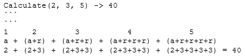

Задача: Реализовать метод:
В небольшом городке *initialPopulation* - это население в начале
года.
Численность населения регулярно увеличивается на несколько
процентов в год
и более того *visitors* (новые жители в год) приезжают жить в
город.
Сколько лет город должен пройти, чтобы его население больше
или равно населению * currentPopulation *?
Ссылка на решение:
github.com
#Method#Static#DoWhile#if#ArgumentException#UnitTests
Задача: Реализуйте метод *Calculate(a, r, n)*, должен
возвращать сумму первых *n* элементов последовательности, в
которой каждый элемент является суммой заданного целого числа
*a* и количества вхождений заданного целого числа *r*,
основанное на положении элемента в последовательности.
Пример:

Ссылка на решение:
github.com
#TryCatch#For#Checked#UnitTests
Задача:
Реализуйте алгоритм поиска [GCD]двух
целых чисел.
Целые числа могут быть большими, поэтому вам нужно найти умное
решение.
Ссылка на решение:
github.com
#MAth#For#IfElse#UnitTests
Задача: Вернуть количество (количество) гласных в данной строке.
Мы будем рассматривать **a**, **e**, **i**, **o** и **u** как
гласные для этой задачи подсчета гласных.
Cтрока ввода будет состоять только из строчных букв и / или
пробелов.
Не используйте LINQ-запросы для решения проблемы!
Ссылка на решение:
github.com
#If#Foreach#Equals#UnitTests#Array
Задача: Реализовать метод CheckIfSymmetric(), который принимает
массив целых чисел
содержит 0 и 1 в качестве входных данных и возвращает «Да» или
«Нет» в зависимости от того,
данный массив является симметричным или нет.
*Не используйте LINQ-запросы для решения проблемы!*
Ссылка на решение:
github.com
#UnitTests#Array#If#Else#Break#For
Задача: Реализуйте метод NextBiggerThan, который принимает
положительное целое число *число* и возвращает ближайшее
наибольшее целое число, состоящее из цифр исходного числа, и
ноль, если такого числа не существует.
*Не используйте LINQ-запросы для решения проблемы!*
Ссылка на решение:
github.com
#Nullable#UnitTests#Array#If#For
Задача: Реализуйте метод OrderStringsByLength, который сортирует
исходный массив строк в порядке возрастания их длины.
*Не используйте LINQ-запросы для решения проблемы!*
Ссылка на решение:
github.com
#If#Foreach#Array#DoWhile#UnitTests
Задача: Реализуйте метод RemoveDuplicateWords, который удаляет
все повторяющиеся слова из строки, оставляя только одиночные
(первые) записи слов.Под словом мы будем понимать единицу,
состоящую только из букв
латинского алфавита.
Только следующие знаки препинания (.,!? -:;) и пробелы
могут быть разделителями между словами.
Ссылка на решение:
github.com
P.S. Смотреть две ветки, Одна с LinQ, Вторая без LinQ
#LinQ#If#Foreach#Array#DoWhile#UnitTests
Задача: Реализуйте метод GetNeighbors, который возвращает из
набора *точек* только точки, являющиеся *h* -соседями для
*точки* с целочисленными координатами *x* и *y*.
Точка *Neighbor(xNeighbor, yNeighbor)* является *h* -соседом
для данной *Point(x, y)* с диапазоном *h* (*h* -
положительное целое число)
если координаты этих точек таковы, что | xNeighbor - x |
‹= h и | yNeighbor - n | ‹= h.
Точки, полученные в результате сортировки, не должны
сортироваться (в произвольном порядке).
Ссылка на решение:
github.com
#LinQ#If#List‹›#DoWhile#UnitTests#Unchecked
Задача: Реализуйте для типов, допускающих значение NULL,
дополнительную возможность определения того, является ли
NULL-переменная для значения NULL или нет
Например:
- для переменной string name = "Kathy" => name.IsNull () ->
false
- для переменной string name = null => name.IsNull () ->
true
- для переменной int? i = null => i.IsNull () -> true и т.
д.
Ссылка на решение:
github.com
#Object#UnitTest#If
Задача:
Реализуйте метод FindIndex, который возвращает индекс элемента
в реальном *массиве*, для которого сумма элементов слева от
него равна (в пределах заданной *точности* в диапазоне от 0 до
1) сумме элементов справо. Если таких элементов не существует,
вернуть null.
Ссылка на решение:
github.com
#Nullable#UnitTests#Array#Math
Задача: Реализуйте алгоритм, который определяет, встречаются ли
все
символы (ASCII) в строке только один раз.
Ссылка на решение:
github.com
#For#If#UnitTests#Array
Задача: Текущий проект содержит файл Car.cs. Это пример простого
класса.
Взгляните на пример и выполните следующую задачу:
1) Создать новый класс *Employee* в отдельном файле
2) Добавьте 2 поля, которые содержат следующую информацию:
- Фамилия
- Возраст
Поля НЕ должны быть доступны извне класса.
3) Добавьте 2 consttructor к классу *Employee*:
- Первый конструктор без параметров
- Второй contstructor должен принять 2 аргумента, чтобы
полностью инициализировать нового сотрудника
4) Добавьте 3 метода в класс *Employee*:
- Первый метод НЕ должен быть доступен извне класса. Должен
возвращать значение возраста в строковом формате;
- Второй метод должен изменить фамилию сотрудника на новое
значение, которое должно быть передано в метод;
- Третий метод должен возвращать информацию о сотруднике в
строковом формате: «Фамилия: {Employee.surname}, Возраст:
{Employee.age}»
Ссылка на решение:
github.com
#Class#Ctor#Encapsulation#UnitTests
Задача: Реализовать метод принимающий строку с простым
математическим выражением и возрщающий результат
Ссылка на решение:
github.com
#UnitTests#For#If
Задача: Реализуйте методы для работы с различными коллекциями,
которые реализуют интерфейс IEnumerable ‹T›.
Определения
задач приведены в XML-комментариях для каждого метода.
Ссылка на решение:
github.com
P.S. Смотреть две ветки, Одна с yield, Вторая без yield
#List#Foreach#For#Yield#UnitTests#LinQ

 .NET
.NET

 WEB
WEB
 OTHERS
OTHERS